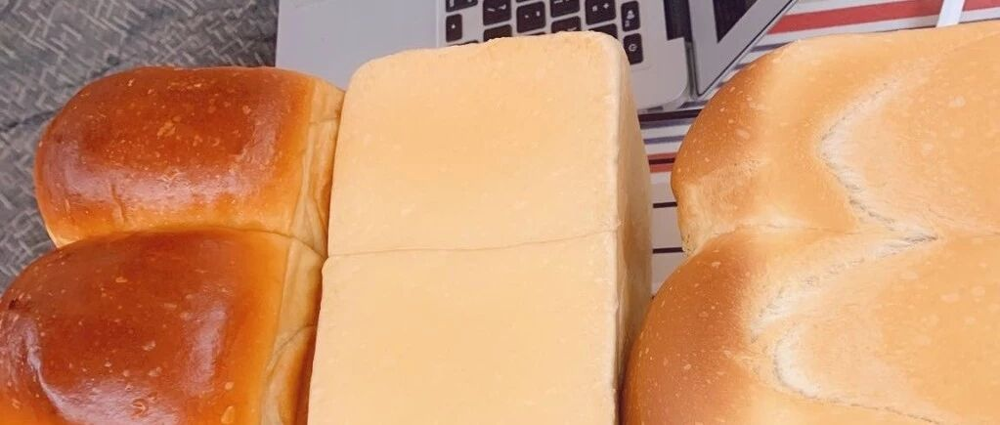

若问人间何时好？ - 淡奶油吐司面包
今天这个吐司是我偶然看到的，做了几次，发现方子十分稳定，方子也没有波兰种那么软，再加上最近和我的厨师机越来越tie，做起来就越来越顺手。
材料：
牛奶 110g
淡奶油 40g
全蛋液 25g （剩下的刷蛋液用）
糖 45g
盐 2g
高粉 270g
酵母 4g
黄油 18g
这个材料用厨师机 4档，3分钟成团，我又加了大概10g牛奶，因为面的种类不同吸水度也不同。成团以后再4分钟，4档，然后2分钟2档，加入黄油接着4分钟 4档。就可以了。
步骤：
所有材料成团，加入黄油，一定要揉到手套膜，或者我这个图里半手套膜。


发酵到2倍大。这个方子因为没有水，所以相对来说比较柔软。但是还好。呃。。。这是发酵前的样子。。。

取出面团，挤压空气，擀成方形。

分成三部分。

每部分，三折，然后擀开，分成三条，编成辫子，我编的不好看，随便吧。其实现在想想应该搓成圆柱，然后编4股的，我比较拿手啊！下次吧。


理好以后，二次发酵。175度，40分钟。看到上色，可以加加盖锡纸。


还有其他的面包方子可以选择哒